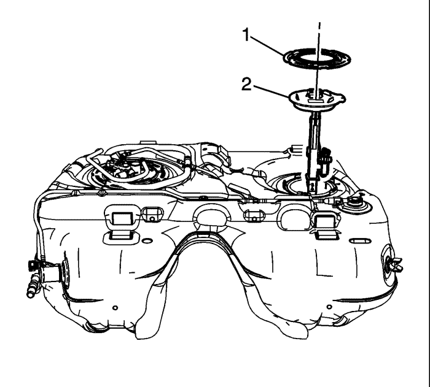
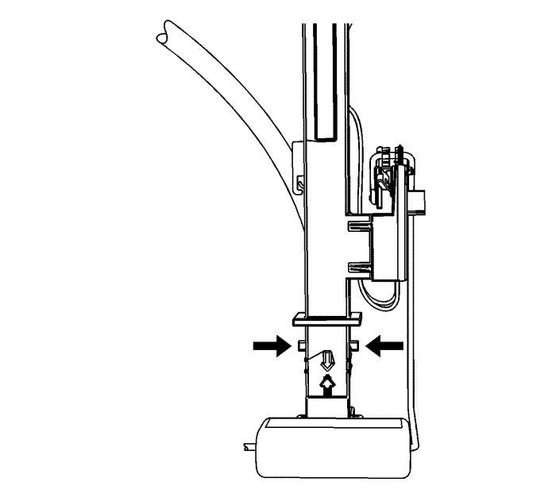
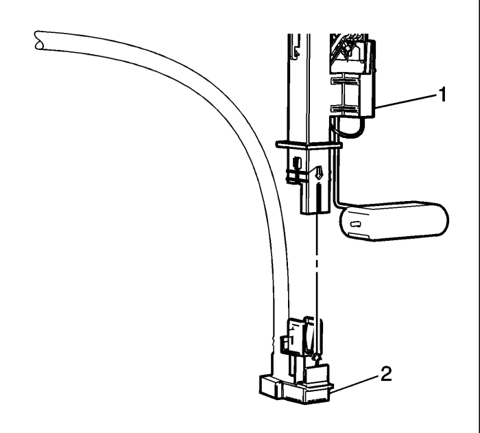
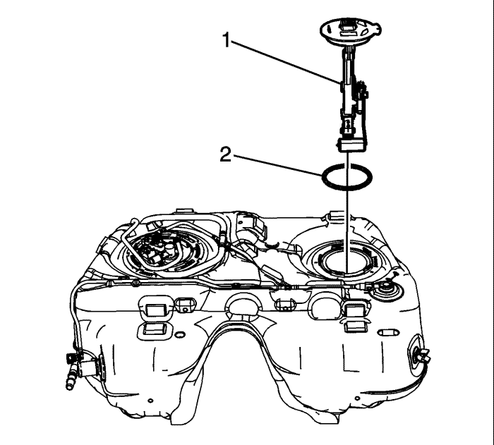

Desemborne el conector eléctrico del mazo de cables del depósito de combustible (2) del módulo de la bomba de combustible del depósito de combustible secundario.
Desmonte el mazo de cables del depósito de combustible del clip de sujeción (3).
Coloque el mazo de cables del depósito de combustible (1) fuera de su posición.
Monte la herramienta CH-48482 en el anillo de bloqueo del módulo de la bomba de combustible del tanque de combustible.
Utilizando la herramienta CH-48482 y una barra larga, gire el anillo de bloqueo a la izquierda desbloqueando el anillo de bloqueo del módulo de la bomba de combustible del depósito de combustible.
Quite la herramienta CH-48482.

Desmonte el anillo de bloqueo del módulo del depósito de combustible (1).
Levante lentamente el módulo de la bomba de combustible del depósito de combustible (2) hasta que el brazo del flotador del sensor de nivel de combustible y la boquilla de succión del módulo de la bomba de combustible del depósito de combustible estén visibles.

Apriete las pestañas de la boquilla de succión del módulo de la bomba de combustible del depósito de combustible principal en cualquier lado de la boquilla para desacoplar la boquilla de succión del módulo de la bomba de combustible del depósito de combustible secundario.

Quite la boquilla de succión del módulo de la bomba de combustible del depósito de combustible principal (2) del módulo de la bomba de combustible del depósito de combustible secundario (1).

Incline el módulo hacia la parte trasera del depósito de combustible para permitir que el brazo del flotador del sensor de nivel despeje la entrada del depósito. Retire el módulo (1) del depósito.
Desmonte y deseche la junta tórica (2) del módulo del depósito de combustible.
Si se sustituye el módulo de la bomba de combustible del depósito de combustible secundario, extraiga, si fuera necesario, el sensor de nivel de combustible secundario. Consultar Sustitución del sensor del nivel de combustible secundario .
Si se sustituye el módulo de la bomba de combustible del depósito de combustible secundario, monte, si fuera necesario, el sensor de nivel de combustible secundario. Consultar Sustitución del sensor del nivel de combustible secundario .
Monte una nueva junta tórica (2) del módulo del depósito de combustible en el depósito.
Incline el módulo hacia la parte trasera del depósito de combustible para permitir que el brazo del flotador del sensor de nivel de combustible despeje la entrada del depósito. Monte el módulo (1) en el depósito de combustible.
Alinee la flecha (2) en la boquilla de succión del módulo de la bomba de combustible del depósito de combustible principal con la flecha (1) del módulo de la bomba de combustible del depósito de combustible secundario. Monte la boquilla de succión del módulo de la bomba de combustible del depósito de combustible principal en del módulo de la bomba de combustible del depósito de combustible secundario.
Baje el módulo de la bomba de combustible del depósito de combustible (2) hasta el depósito de combustible.
Monte el anillo de bloqueo del módulo del depósito de combustible (1).
Monte la herramienta CH-48482 en el anillo de bloqueo del módulo de la bomba de combustible del tanque de combustible.
Utilizando la herramienta CH-48482 y una barra larga, gire el anillo de bloqueo a la derecha bloqueando el anillo de bloqueo del módulo de la bomba de combustible del depósito de combustible.
Extraiga la herramienta CH-48482 del anillo de bloqueo del módulo de la bomba de combustible del tanque de combustible.
Coloque el mazo de cables del depósito de combustible (1) en el módulo.
Emborne el conector eléctrico del mazo de cables del depósito de combustible (2) en el módulo de la bomba de combustible del depósito de combustible secundario.
Monte el mazo de cables del depósito de combustible en el clip de sujeción (3).